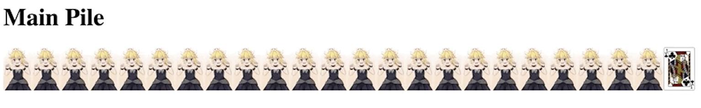
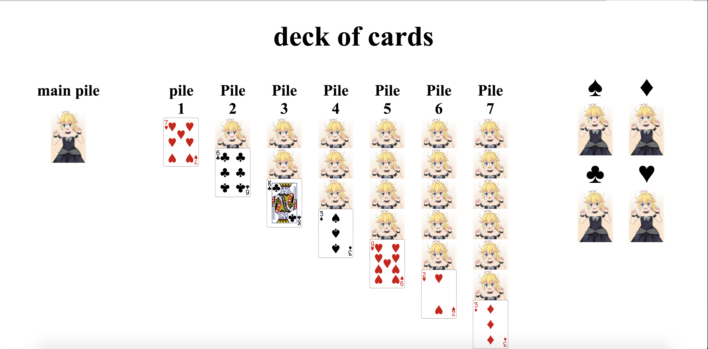

Staring off, we get the cards from the api

Let's make some holding pens for these cards

The cards need to go into their own little pens though and not all crowd in the main deck
The cards are their own object in javascript, as of now the structure is
object card ={
id(Not much use for this one),
code(which is the suit and value),
img(the api which I use have preset images of the card front),
is_active(This tells whether a card should be face up or face down)
}
Lets make it look a little more like solitiare

Alas, you cannot see the cards before you've used them, this is not solitaire! Fortunately for us, vue has easy html integration so one if statement later and...

Because it's 2018
Currently, the document is only checking to see if it is the last card to show it, but we'll get to that later. First we actually have to add the dreaded drag and drop. Which is probably going to be the hardest part of this entire project.

We can now drag and drop the cards. As of now, this was actually one of the hardest things I've had to overcome in the creation of this app. So many different vue drag and drop add-ons and plug-ins have been killed and used by me. I've dabbled in vue-cli and npm but in the end, I only wanted to create a lightweight app and the simplest solution was just to use the HTML default drag and drop API along with Vue. This problem took me around 4 days to actually tackle.
Smoke and mirrors though, this function only gets rid of a card in the first pile and places it in the second. It's what will impress the project managers though.
Now, this is the real shit.

Unfortunately, the divs for dropping are reduced to nothing so you cannot drop a card into an empty div so lets just make the height a little higher in css

Wew lad, the drop divs are a good size now, but the main div is lacking

Now we're gucci af.
I guess now we actually have to focus on actually doing the active cards instead of cheesing it with the last element in the array, so lets get this. Just need to change an if statement right?
<div v-if="index==cards.length-1">
<card-item @dragstart.native = "on_drag_start" :card_img="card.img" :card_id="card.code"></card-item>
</div>
<div v-else>
<img draggable = "false" src="images/bowsette.jpg"></img>
</div>
to
<div v-if="card.active==true">
<card-item @dragstart.native = "on_drag_start" :card_img="card.img" :card_id="card.code"></card-item>
</div>
<div v-else>
<img draggable = "false" src="images/bowsette.jpg"></img>
</div>
Should work right? ...... r i g h t?

Well, it actually did work, I'm amazed
As you can see though, it doesn't actually reveal the card or makes them active so lets do that. Adding to our remove card from pile function making the last item in the array active.
if(pile_2.cards.length>0){
pile_2.cards[(pile_1.cards.length)-1].active=true;
}
Add this to our code and hopefully it works on pile 2

Holy it does, today has been a world of wonder for me folks.
But, does it work for the other piles?

Man, today has just been a great day for me, first try for everything, usually this doesn't happen
Lemme take a break here to tell you about my environment for todays session. Starbucks with a cup of chai tea which I have refilled twice already with free hot water.
There is a girl right next to me making me nervous but I'll survive this for right now
Reading a quick book and I'll get back to it
Now let's talk about the logic of solitiare here. A card can only be placed under a card if the number is one less and the color of the card is different. Thankfully, the card code already has the card value and the suit. So i've just gotta parse it.
Here's what we got for the card suit checker
if((from_card_suit=="H" || from_card_suit=="D") && (to_card_suit=="C" || to_card_suit=="S")){
return true;
}else if((from_card_suit=="C" || from_card_suit=="S") && (to_card_suit=="H" || to_card_suit=="D")){
return true;
}else{
return false;
}
return false;
mmmmm, the smell of cheese fills the air along with the stench of brute force. I care about making my code look beautiful so I'll change this later
Now let's see what we got for our value checker
is_correct_value:function(to_card_value, from_card_value){
var code_to_value = new Map([
['A' , 1 ],
['2' , 2 ],
['3' , 3 ],
['4' , 4 ],
['5' , 5 ],
['6' , 6 ],
['7' , 7 ],
['8' , 8 ],
['9' , 9 ],
['0' , 10 ],
['J' , 11 ],
['Q' , 12 ],
['K' , 13 ]
])
var to_card_num = code_to_value.get(to_card_value);
var from_card_num = code_to_value.get(from_card_value);
if(from_card_num == to_card_num-1){
return true;
}
return false;
}
Beautiful
Let's see it all in action now

Fantastical
Two roads diverged in a path, there stands ahead of us
Let's flip a coin tails for design and heads for technical stuff
The gods have spoken, lets use that technical noggin
First off, lets fix the top card thing since it'll be more like solitaire then.
From this
To this

But wait, dragging cards still doesn't work

Much better, we're actually looking like a solitaire game now, something that I could play for hours!
As you've seen from the last slide, I got a little ahead of myself in this documentation and started work on the finished piles now.

With a snap of our hands, and working until 1:30A.M. we have finished the finished cards pile. Our solitaire game is looking to be quite the good stuff here

Dang, I am on a roll this entire week
But now we get to one of the hardest parts. Which is dragging multiple cards at once instead of just one
I believe this shouldn't be that hard as we can just call splice on the array instead of pop, but I've been proven wrong before many times

Ladies and Gentlemen, we got him
Now for a quick design fix, first we'll try to move the finished piles to the side of the screen

May, I call for a time of silence, this is the best day of my life.
But, something feels so empty inside, being a god at solitaire isn't an easy job so I've gotta shake things up. I'll start on getting the cards to actually overlap like regular cards do. Hopefully changing the z-index and adding some relative css will help

A slight of the hand, like a magician pulling a wonderful trick. How you might ask? Elementary my dear watson. Simply make every card have a top margin of a negative number and the title have a bottom margin of a higher number
To be honest, I'm quite proud of myself for this
And now the board can compliment the beauty of Bowsette
But, the margin thing is just a temporary bandage, what happens if we overflow?

Egads, that's not very cash money

Using the power of javascript in order to dynamically make the cards fit? Now that's pretty cash money
Oh, I seem to have shown something else I wasn't supposed to but the background is green now, all the other cool solitaire games do that
It's not very intuitive to have someone press a button to get cards and show the empty board. It also can result in situations like this

Lets add some more functionality
As I was working on this solitiare game, the new Mac Mojave came out along with a very very nice capture feature. Actually saves it in a compact and smooth MP4 instead of a gif
And let's change the design once again to make it more sleek.
Now lets make this solitiare game a little harder first by preparing our main pile to handle three cards
And we also have a difficulty selector too!
New start screen